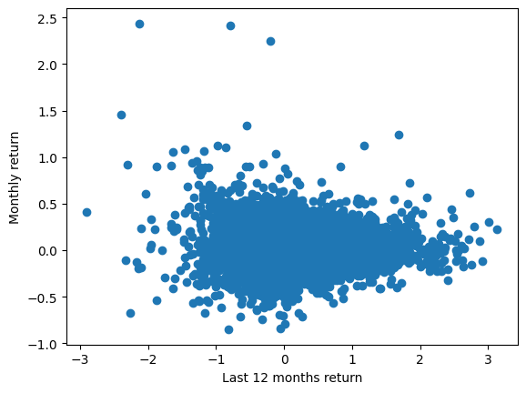
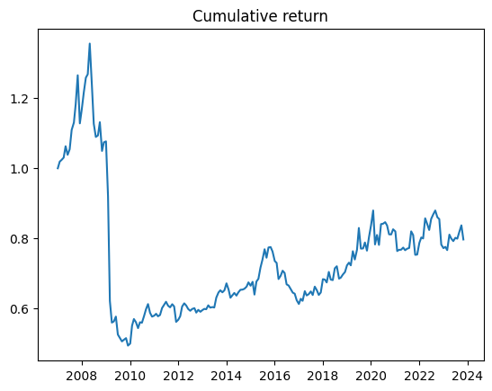
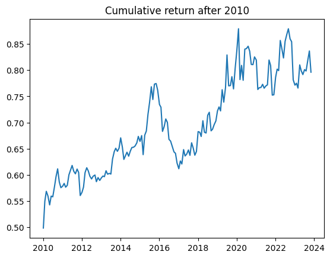
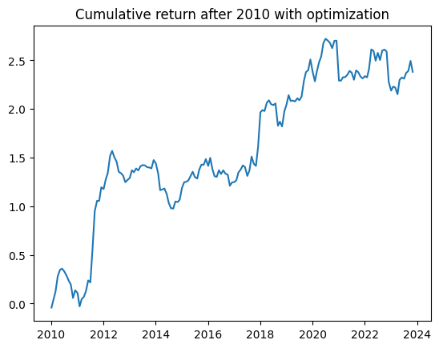

Value and Momentum Everywhere
May 1, 2025Table of Contents
Research Basis
This strategy is based on the following paper: ASNESS, C.S., MOSKOWITZ, T.J. and PEDERSEN, L.H. (2013), Value and Momentum Everywhere. The Journal of Finance, 68: 929-985.
In which the authors use a classic value and momentum strategy. The idea is that:
For momentum, we use the common measure of the past 12-month cumulative raw return on the asset, skipping the most recent month's return, MOM2–12. We skip the most recent month, which is standard in the momentum literature, to avoid the 1-month reversal in stock returns, which may be related to liquidity or microstructure issues
Collect the list of the S&P 500 companies from Wikipedia and save it to a file
# Collect the list of the S&P 500 companies
import os
import requests
import pandas as pd
# Get the list of S&P 500 companies from Wikipedia
url = 'https://en.wikipedia.org/wiki/List_of_S%26P_500_companies'
response = requests.get(url)
html = response.content
df = pd.read_html(html, header=0)[0]
tickers = df['Symbol'].tolist()Load the data from yahoo finance
# Load the data from yahoo finance
import os
import yfinance as yf
def load_data(symbol):
direc = 'data/'
os.makedirs(direc, exist_ok=True)
file_name = os.path.join(direc, symbol + '.csv')
if not os.path.exists(file_name):
ticker = yf.Ticker(symbol)
df = ticker.history(start='2005-01-01', end='2023-12-31')
df.to_csv(file_name)
df = pd.read_csv(file_name, index_col=0)
df.index = pd.to_datetime(df.index, utc=True).tz_convert('US/Eastern')
df['date'] = df.index
if len(df) == 0:
os.remove(file_name)
return None
return df
holder = []
ticker_with_data = []
for symbol in tickers:
df = load_data(symbol)
if df is not None:
holder.append(df)
ticker_with_data.append(symbol)
tickers = ticker_with_data[:]Code Explanation
This code section:
- Creates a function load_data that efficiently manages stock data by:
- Creating a 'data' directory if it doesn't exist
- Checking if data for a stock symbol already exists locally
- If not, downloading it from Yahoo Finance and saving it as CSV
- Converting timestamps to US/Eastern timezone for consistency
- Implements a caching mechanism to avoid unnecessary API calls:
- Saves downloaded data as CSV files
- Reuses existing files in subsequent runs
- Handles data quality by:
- Removing empty datasets
- Maintaining a clean list of tickers with valid data
- Creates two lists:
- holder: Stores the actual stock data
- ticker_with_data: Keeps track of valid stock symbols
We only need the monthly data, so we will resample the data, Open should be the first day of the month, Close should be the last day of the month High should be the maximum value of the month, Low should be the minimum value of the month
monthly_data = []
for data in holder:
df = data.resample('M').agg({
'date': 'first',
'Open': 'first',
'High': 'max',
'Low': 'min',
'Close': 'last',
'Volume': 'sum'
})
df.set_index('date', inplace=True)
monthly_data.append(df)
del holder
Now we need to add the momentum factor to the data. Assuming the we will open at the monthly open price and will close at the monthly close
monthly_data = []
import numpy as np
from multiprocessing import Pool
def process_data(df):
df['intra_month_return'] = df['Close'] / df['Open'] - 1
df['next_month_return'] = df['intra_month_return'].shift(-1)
df['monthly_return'] = df['Close'].pct_change()
# Last 12 months return except the current month
df['rolling_12_months_return'] = df['Close'].pct_change().rolling(11).sum().shift()
return df
n_cores = min(os.cpu_count()-2, len(monthly_data))
with Pool(n_cores) as p:
monthly_data = p.map(process_data, monthly_data)
Code Explanation
This code section calculates various return metrics using parallel processing:
- Calculates three types of returns for each stock:
intra_month_return: The return within each month (Close/Open - 1)next_month_return: The following month's return (shifted forward)monthly_return: The percentage change in closing prices
- Implements the momentum strategy by:
- Computing rolling 12-month returns excluding the current month
- Using
shift()to avoid look-ahead bias
- Optimizes performance through parallel processing:
- Uses Python's multiprocessing Pool
- Automatically determines optimal number of CPU cores to use
- Processes multiple stocks simultaneously
Next step is to conduct a simple regression to test the hypothesis
import matplotlib.pyplot as plt
import statsmodels.api as sm
holder = []
for df in monthly_data:
holder.append(df[['rolling_12_months_return', 'next_month_return', 'monthly_return']].dropna())
df_for_regression = pd.concat(holder, axis=0, ignore_index=True)
plt.scatter(df_for_regression['rolling_12_months_return'], df_for_regression['next_month_return'])
plt.xlabel('Last 12 months return')
plt.ylabel('Monthly return')
plt.show()
# Clearly, we have some outliers and we need to get rid of them
# Clean the data from outliers. Keep the data within 5 standard deviations
mask_next_month_return = (np.abs(df_for_regression['next_month_return'] - df_for_regression['next_month_return'].mean()) < 3 * df_for_regression['next_month_return'].std())
mask_rolling_12_months_return = (np.abs(df_for_regression['rolling_12_months_return'] - df_for_regression['rolling_12_months_return'].mean()) < 3 * df_for_regression['rolling_12_months_return'].std())
df_for_regression = df_for_regression[
mask_next_month_return & mask_rolling_12_months_return
]
X = sm.add_constant(df_for_regression['rolling_12_months_return'])
y = df_for_regression['next_month_return']
model = sm.OLS(y, X)
results = model.fit()
OLS Regression Results
==============================================================================
Dep. Variable: next_month_return R-squared: 0.001
Model: OLS Adj. R-squared: 0.001
Method: Least Squares F-statistic: 63.48
Date: Mon, 03 Jun 2024 Prob (F-statistic): 1.63e-15
Time: 10:44:48 Log-Likelihood: 1.0903e+05
No. Observations: 96069 AIC: -2.180e+05
Df Residuals: 96067 BIC: -2.180e+05
Df Model: 1
Covariance Type: nonrobust
============================================================================================
coef std err t P>|t| [0.025 0.975]
--------------------------------------------------------------------------------------------
const 0.0119 0.000 41.059 0.000 0.011 0.012
rolling_12_months_return -0.0079 0.001 -7.968 0.000 -0.010 -0.006
==============================================================================
Omnibus: 1546.078 Durbin-Watson: 2.076
Prob(Omnibus): 0.000 Jarque-Bera (JB): 3087.622
Skew: -0.012 Prob(JB): 0.00
Kurtosis: 3.878 Cond. No. 4.05
==============================================================================
Analysis of the Results
- The p-value of the coefficient of the rolling 12 months return is 0.0, which means that the coefficient is statistically significant.
- The coefficient is negative and is against the momentum effect, which means that the stocks that have performed well in the past 12 months tend to under perform in the next month.
Possible reasons for the negative coefficient:
- There's a mistake in the code. Please let me know if you find any to make the code correct.
- Our universe is S&P 500, which is a large-cap index of the time that you run the code. There's a possibility that the momentum effect is not valid for large-cap stocks.
- The time period that we used for the analysis is different from the time period that the momentum effect was found in the literature.
- Maybe the effect is gone and not tradable anymore.
- Maybe the effect can be found in the tails.
Next Steps
Let's do the regression on the tails for each month. It means, that we may see the effect for the largest growths and largest declines.
Creating Long and Short Portfolios
Now we'll create separate dataframes for long and short positions based on the momentum signals. We'll select the top N stocks with positive momentum for long positions and the bottom N stocks with negative momentum for short positions.
# Initialize holders for different return series
rolling_12_months_return_holder = []
next_month_return_holder = []
monthly_return_holder = []
# Creating tables with symbols as columns and the data as rows
first = True
for symbol, df in zip(tickers, monthly_data):
# Extract and clean the return series
rolling_12_months_return_series = df['rolling_12_months_return'].copy().dropna()
next_month_return_series = df['next_month_return'].copy().dropna()
monthly_return = df['monthly_return'].copy().dropna()
# Name the series with the symbol
rolling_12_months_return_series.name = symbol
next_month_return_series.name = symbol
monthly_return.name = symbol
# Append to holders
rolling_12_months_return_holder.append(rolling_12_months_return_series)
next_month_return_holder.append(next_month_return_series)
monthly_return_holder.append(monthly_return)
# Create dataframes from the holders
rolling_12_months_return_df = pd.concat(rolling_12_months_return_holder, axis=1, ignore_index=False)
rolling_12_months_return_df.fillna(0, inplace=True)
next_month_return_df = pd.concat(next_month_return_holder, axis=1, ignore_index=False)
monthly_return_df = pd.concat(monthly_return_holder, axis=1, ignore_index=False)
# Print sample of the dataframes
print(rolling_12_months_return_df.iloc[:5, :5])
print(next_month_return_df.iloc[:5, :5])
print(monthly_return_df.iloc[:5, :5])
# Create long and short portfolios
N = 20 # Number of stocks to select for each portfolio
# Create masks for positive and negative momentum
long_df = rolling_12_months_return_df[(rolling_12_months_return_df > 0)]
short_df = rolling_12_months_return_df[(rolling_12_months_return_df < 0)]
# Select top N stocks for each portfolio
long_df = long_df.mask(long_df.rank(axis=1, method='dense', ascending=False) > N, np.nan)
short_df = short_df.mask(short_df.rank(axis=1, method='dense', ascending=True) > N, np.nan)
# Get the symbols for long and short positions
long_df_symbols = long_df.apply(lambda row: row.dropna().index.tolist(), axis=1)
short_df_symbols = short_df.apply(lambda row: row.dropna().index.tolist(), axis=1)Code Explanation
This code section:
- Creates separate dataframes for different return series
- Processes the data to handle missing values
- Selects the top 20 stocks with positive momentum for long positions
- Selects the bottom 20 stocks with negative momentum for short positions
- Creates lists of symbols for both long and short portfolios
Analyzing Portfolio Returns
Now we'll analyze the returns of our long and short portfolios by preparing the data for regression analysis.
# Find the values of each ticker the long and short in rolling_12_months_return_df and next_month_return_df
# and flatten them for a regression
mask = long_df.notna() | short_df.notna()
rolling_12_months_return_df_for_regression = rolling_12_months_return_df[mask]
next_month_return_df_for_regression = next_month_return_df[mask]
# Flatten the data
rolling_12_months_return_holder = []
next_month_return_holder = []
for i in range(len(rolling_12_months_return_df_for_regression)):
rolling_12_months_return_holder.extend(rolling_12_months_return_df_for_regression.iloc[i].tolist())
next_month_return_holder.extend(next_month_return_df_for_regression.iloc[i].tolist())
rolling_12_months_return_df_for_regression = pd.Series(rolling_12_months_return_holder)
next_month_return_df_for_regression = pd.Series(next_month_return_holder)
rolling_12_months_return_df_for_regression.name = 'rolling_12_months_return'
next_month_return_df_for_regression.name = 'next_month_return'
df_for_regression = pd.concat([rolling_12_months_return_df_for_regression, next_month_return_df_for_regression], axis=1)
df_for_regression = df_for_regression.dropna()
X = sm.add_constant(df_for_regression['rolling_12_months_return'])
y = df_for_regression['next_month_return']
model = sm.OLS(y, X)
results = model.fit()
OLS Regression Results
==============================================================================
Dep. Variable: next_month_return R-squared: 0.002
Model: OLS Adj. R-squared: 0.001
Method: Least Squares F-statistic: 1.692
Date: Mon, 03 Jun 2024 Prob (F-statistic): 0.194
Time: 10:44:48 Log-Likelihood: 366.07
No. Observations: 887 AIC: -728.1
Df Residuals: 885 BIC: -718.6
Df Model: 1
Covariance Type: nonrobust
============================================================================================
coef std err t P>|t| [0.025 0.975]
--------------------------------------------------------------------------------------------
const 0.0132 0.006 2.277 0.023 0.002 0.025
rolling_12_months_return 0.0102 0.008 1.301 0.194 -0.005 0.026
==============================================================================
Omnibus: 298.612 Durbin-Watson: 1.739
Prob(Omnibus): 0.000 Jarque-Bera (JB): 2635.535
Skew: 1.273 Prob(JB): 0.00
Kurtosis: 11.051 Cond. No. 1.65
==============================================================================
Code Explanation
This code section prepares and analyzes the portfolio data:
- Data Selection and Filtering:
- Creates a mask to identify stocks in either long or short portfolios
- Filters the return data based on the portfolio selections
- Data Transformation:
- Flattens the time-series data into a single series for analysis
- Converts the data structure from wide (panel) to long format
- Preserves both the momentum indicator (12-month returns) and the target variable (next month returns)
- Regression Analysis Setup:
- Creates a clean dataset by removing any missing values
- Adds a constant term for the regression intercept
- Sets up the OLS (Ordinary Least Squares) regression model
Analysis of the Results
Although the p-value is not significant statistically, we can see a positive relationship between the rolling 12 months return and next month return on the tails.
That's a good sign, it means we can trade momentum factor cross sectionally. At least we can give it a shot.
dates_holder = []
strategy_monthly_return_holder = []
for date, long_symbols, short_symbols in zip(long_df.index, long_df_symbols, short_df_symbols):
monthly_return_tmp_holder = []
for symbol in long_symbols:
if date not in next_month_return_df.index:
continue
monthly_return_tmp_holder.append(next_month_return_df.loc[date, symbol])
for symbol in short_symbols:
if date not in next_month_return_df.index:
continue
monthly_return_tmp_holder.append(-next_month_return_df.loc[date, symbol])
if len(monthly_return_tmp_holder) == 0:
continue
dates_holder.append(date)
strategy_monthly_return_holder.append(np.mean(monthly_return_tmp_holder))
# Skipping the first 12 months because of the rolling 12 months return
n_cut = 12
dates_holder = dates_holder[n_cut:]
strategy_monthly_return_holder = strategy_monthly_return_holder[n_cut:]
# Find the cumsum of the strategy return
strategy_monthly_return_holder_cum = np.array(strategy_monthly_return_holder)
strategy_monthly_return_holder_cum = strategy_monthly_return_holder_cum + 1
strategy_monthly_return_holder_cum = np.cumprod(strategy_monthly_return_holder_cum)
sharpe = np.mean(strategy_monthly_return_holder) / np.std(strategy_monthly_return_holder) * np.sqrt(12)
print(f'Sharpe ratio: {sharpe:4f}')
plt.plot(dates_holder, strategy_monthly_return_holder_cum)
plt.title('Cumulative return')
plt.show()Code Explanation
This code section implements the core momentum trading strategy:
- Portfolio Construction:
- Iterates through each date to build long and short positions
- For long positions: Takes positive returns from stocks with positive momentum
- For short positions: Takes negative returns from stocks with negative momentum

Post-Financial Crisis Analysis
To better understand the strategy's performance in more recent market conditions, let's analyze the returns after the 2008 financial crisis, starting from 2010:
# Calculate Sharpe ratio for post-2010 period
# Find the first date after 2010
first_date = None
for date in dates_holder:
if date.year >= 2010:
first_date = date
break
# Find the index of the first date
first_index = dates_holder.index(first_date)
dates_after_2010 = dates_holder[first_index:]
strategy_monthly_return_holder_after_2010 = strategy_monthly_return_holder[first_index:]
# Calculate post-2010 Sharpe ratio
sharpe = np.mean(strategy_monthly_return_holder_after_2010) / np.std(strategy_monthly_return_holder_after_2010) * np.sqrt(12)
print(f'Sharpe ratio after 2010: {sharpe:4f}')
# Plot cumulative returns for post-2010 period
plt.plot(dates_after_2010, strategy_monthly_return_holder_cum[first_index:])
plt.title('Cumulative return after 2010')
plt.show()
Analysis of Post-Crisis Performance
This analysis segment focuses on the strategy's modern-era performance:
- Isolates returns from 2010 onwards to exclude financial crisis effects
- Recalculates Sharpe ratio for this specific period
- Visualizes cumulative returns to assess strategy stability
- Helps evaluate if the momentum effect persists in recent market conditions
Portfolio Optimization with Modern Portfolio Theory
To improve the strategy's performance, we can implement Modern Portfolio Theory (MPT) for optimal portfolio weights instead of using equal weights. This approach should help us better balance risk and return:
# Import optimization tools
from scipy.optimize import minimize
def objective_function(weights):
return np.dot(weights.T, np.dot(covariance_matrix, weights))
def constraint_function(weights):
return np.dot(weights, expected_returns_for_opt) - target_return
monthly_return_holder = []
for date in long_df.index:
this_month_returns = []
if date not in next_month_return_df.index:
continue
if date.year < 2010:
continue
rolling_12_returns_long = long_df.loc[date].dropna()
rolling_12_returns_short = short_df.loc[date].dropna()
ticker_to_long = long_df_symbols[date]
ticker_to_short = short_df_symbols[date]
next_month_returns_long = next_month_return_df.loc[date, ticker_to_long]
next_month_returns_short = next_month_return_df.loc[date, ticker_to_short]
ticker_to_have_position = ticker_to_long + ticker_to_short
past_returns = monthly_return_df.loc[:date, ticker_to_have_position].iloc[-48:]
past_returns.fillna(0, inplace=True)
# The multiplication by -1 is because we are shorting the stocks
# We use the rolling 12 months return as the expected return because we are using the past 12 months to predict the next month
# And based on the theory, we are using the past 12 months to predict the next month, with a linear regression
# It means, our expectation for the next month return is a coefficient times the past 12 months return
expected_returns_for_opt = rolling_12_returns_long.tolist() + rolling_12_returns_short.tolist()
covariance_matrix = past_returns.cov()
# Optimize the weights of the portfolio
target_return = 0.0
n_assets = len(expected_returns_for_opt)
initial_guess = np.ones(n_assets) / n_assets # Equal-weighted portfolio as initial guess
bounds = [(0.0, 1) for _ in range(len(ticker_to_long))] + \
[(-1, -0.0) for _ in range(len(ticker_to_short))]
constraints = {'type': 'eq', 'fun': constraint_function}
# Solve the optimization problem
result = minimize(objective_function, initial_guess, method='SLSQP', bounds=bounds, constraints=constraints)
optimal_weights = result.x
optimal_weights = optimal_weights / np.sum(np.abs(optimal_weights))
# Get the next month returns with the optimal weights
expected_returns_for_sim = next_month_returns_long.tolist() + next_month_returns_short.tolist()
next_month_return_with_optimal_weights = np.dot(optimal_weights, expected_returns_for_sim)
monthly_return_holder.append(next_month_return_with_optimal_weights)
sharpe = np.mean(monthly_return_holder) / np.std(monthly_return_holder) * np.sqrt(12)
print(f'Sharpe ratio after 2010 with optimization: {sharpe:4f}')
plt.plot(dates_after_2010, np.cumsum(np.array(monthly_return_holder)))
plt.title('Cumulative return after 2010 with optimization')
plt.show()

Portfolio Optimization Methodology
This implementation uses Modern Portfolio Theory to enhance the strategy:
- Risk-Return Framework:
- Objective: Minimize portfolio variance for a given target return
- Uses 48-month historical data to estimate covariance matrix
- Incorporates both long and short positions in the optimization
- Optimization Constraints:
- Long positions: Weights between 0 and 100%
- Short positions: Weights between -100% and 0%
- Portfolio is always fully invested (sum of absolute weights = 1)
- Implementation Details:
- Uses SLSQP (Sequential Least Squares Programming) optimization
- Starts with equal weights as initial guess
- Rebalances portfolio monthly based on new signals
Important Considerations
- Transaction costs are not included in this analysis
- The optimization assumes we can perfectly execute at historical prices
- Look-ahead bias is avoided by using only past data for optimization
- The strategy's complexity increases computational requirements and potential for overfitting